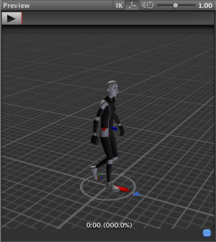

Unity Manual>User Guide>Creating Gameplay>Mecanim Animation System>Bringing Characters to Life>Mecanim Advanced topics>Root Motion - how it works
Root Motion - how it works
Body Transform
The body transform must be set to be the same for all humanoid characters (from a retargeting standpoint). The body mass center should be used as the body position as this will nearly follow a straight line in most circumstances. The body orientation is an average of the lower and upper body orientation. Do not use the hips to store the world-space position and orientation of the animation as this can lead to unpredictable results. The body orientation is at identity for the Avatar T-Pose.
The body position and orientation are stored in the Animation Clip (using the Muscle definitions set up in the Avatar). They are the only world-space curves stored in the Animation Clip. Everything else: muscle curves and IK goals (Hands and Feet) are stored relative to the body transform.
Root Transform
The Root Transform is a projection on the Y plane of the Body Transform and is computed at runtime. At every frame, a change in the Root Transform is computed. This change in transform is then applied to the Game Object to make it move.

The circle below the character represents the root transform
Animation Clip Inspector
The Animation Clip Editor settings (Root Transform Rotation, Root Transform Position (Y) and Root Transform Position (XZ)) let you control the Root Transform projection from the Body Transform. Depending on these settings some parts of the Body Transform may be transferred Root Transform. For example you can decide if you want the motion Y position to be part of the Root Motion (trajectory) or part of the pose (body transform), which is known as Baked into Pose.

Root Transform Rotation
Bake into Pose: The orientation will stay on the body transform (or Pose). The Root Orientation will be constant and delta Orientation will be identity. This means the the Game Object will not be rotated at all by that AnimationClip.
Only AnimationClips that have similar start and stop Root Orientation should use this option. You will have a Green Light in the UI telling you that an AnimationClip is a good candidate. A suitable candidate would be a straight walk or a run.
Based Upon: This let you set the orientation of the clip. Using , the clip will be oriented to follow the forward vector of body. This default setting works well for most Motion Capture (Mocap) data like walks, runs, and jumps, but it will fail with motion like strafing where the motion is perpendicular to the body's forward vector. In those cases you can manually adjust the orientation using the setting. Finally you have that will automatically add the authored offset found in the imported clip. It is usually used with Keyframed data to respect orientation that was set by the artist.
Offset: used to enter the offset when that option is chosen for Based Upon.
Root Transform Position (Y)
This uses the same concepts described in Root Transform Rotation.
Bake Into Pose: The Y component of the motion will stay on the Body Transform (Pose). The Y component of the Root Transform will be constant and Delta Root Position Y will be 0. This means that this clip won’t change the Game Object Height. Again you have a Green Light telling you that a clip is a good candidate for baking Y motion into pose.
Most of the AnimationClips will enable this setting. Only clips that will change the GameObject height should have this turned off, like jump up or down.
Note: the
Animator.gravityWeight is driven by Bake Into Pose position Y. When enabled, gravityWeight = 1, when disable = 0. gravityWeight is blended for clips when transitioning between states.Based Upon: In a similar way to Root Transform Rotation you can choose from or . There is also a option that is very convenient for AnimationClips that change height (Bake Into Pose disabled). When using the Root Transform Position Y will match the lowest foot Y for all frames. Thus the blending point always remains around the feet which prevents floating problem when blending or transitioning.
Offset: In a similar way to Root Transform Rotation, you can manually adjust the AnimationClip height using the Offset setting.
Root Transform Position (XZ)
Again, this uses same concepts described in Root Transform Rotation and Root Motion Position (Y).
Bake Into Pose will usually be used for “Idles” where you want to force the delta Position (XZ) to be 0. It will stop the accumulation of small deltas drifting after many evaluations. It can also be used for a Keyframed clip with Based Upon to force an authored position that was set by the artist.
Loop Pose
Loop Pose (like Pose Blending in Blend Trees or Transitions) happens in the referential of Root Transform. Once the Root Transform is computed, the Pose becomes relative to it. The relative Pose difference between Start and Stop frame is computed and distributed over the range of the clip from 0-100%.
Generic Root Motion and Loop Pose.
This works in essentially the same as Humanoid Root Motion, but instead of using the Body Transform to compute/project a Root Transform, the transform set in Root Node is used. The Pose (all the bones which transform below the Root Motion bone) is made relative to the Root Transform.
Page last updated: 2012-11-09